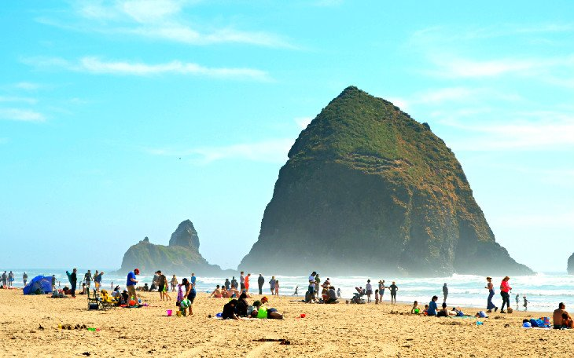
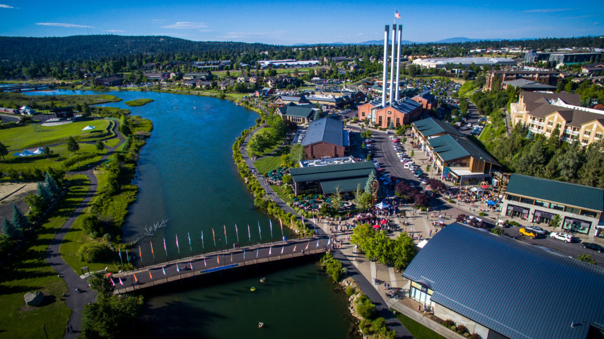

Continue reading for more information on each of those places:
I love visiting San Diego and have seriously considered moving there!
For more information on San Diego click here!

I head up to Seattle often to take advantage of some of the delicious food.
For more information on Seattle click here!
The coast is a quick drive away; I love heading there for a weekend getaway.
For more information on the Oregon Coast click here!
My in-laws live in and around Bend and I love when we drive over the mountain to enjoy the scenery and activities.
For more information on Bend click here!